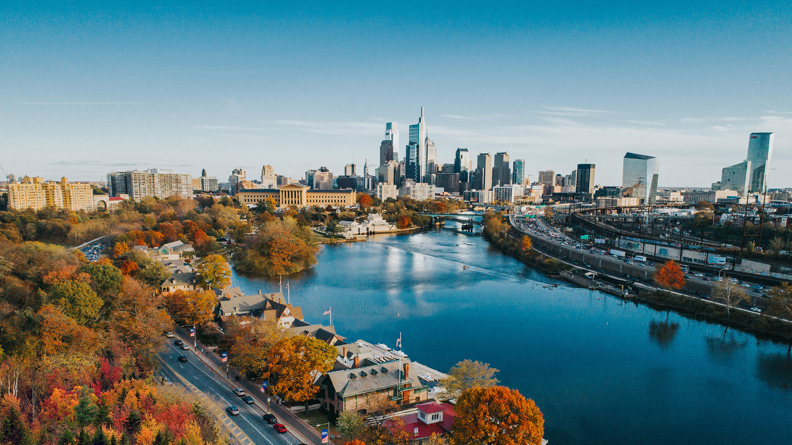

A One Day Guide to First Time Travelers to Philadelphia
Hi there! Are you planning for a one day trip to Philadelphia for the first time? Or Perhaps you're bringing friends or family around the city for the first time. Well, if so you've come to the right place. This is my one day guide to Philadelphia, where I map out the MUST SEE spots in the city. This guide will start out at the Philadelphia William H. Gray III 30th Street Station for visitors coming into the city via Amtrak, SEPTA Regional Rail, and NJ Transit (or even by bus!).
This guide will take you through a list of activities to do throughout the day! Follow along to learn more about Phily's exciting food, art and history in single day.

Overview: One Perfect Day in Philadelphia
This map shows all the stops in the one day itinerary, starting from your arrival at 30th Street Station, through Center City, Chinatown, and into historic Old City. This itinerary is split into 3 sections: morning, afternoon, and evening!
Morning in Philly
Overview of the morning itinerary with all stops
Start: 30th Street Station
Welcome to Philadelphia! Add in description of the history, architecture, etc. about this place
Stop 1: Schuykill Banks
First stretch your legs and enjoy the morning views! Walk details.
Stop 2: Rocky Steps
Run up the steps, photo spot, etc.
Stop 3: Breakfast at The Garden (Barnes Foundation)
What to eat, museum option, link to website.
Getting to Center City
Explain how to walk/transit from Rocky Steps to Reading Terminal / City Hall.
Afternoon: Food & City Core
Overview of Reading Terminal, City Hall/LOVE, Chinatown.
Stop 4: LOVE Park
Views of City Hall, LOVE sign photos, etc.
Stop 5: City Hall
Views of City Hall, LOVE sign photos, etc.
Stop 6: Reading Terminal Market
Food recs, where to enter, etc.
Stop 7: Chinatown Lunch
Suggested blocks/restaurants, link to something.
Heading to Old City
How to get from Chinatown/Center City to Old City.
Evening: Old City & History
Overview of Elfreth's Alley, cheesesteak, Betsy Ross, Independence Hall.